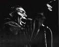

<%@ Page 
    Title="Роберт Палмер о Хаулин Вулфе (из книги Deep Blues). Часть II." 
    MasterPageFile="article.master" 
    %>

<asp:Content ContentPlaceHolderID="PageContent" runat="server">
<table border="0"  width="850">
  <tr><!-- Row 1 -->
     <td>

<p align="justify">"Ди-джей из Западного Мемфиса рассказал мне о шоу Честера Бернетта на радио KWEM, - говорит Сэм Филлипс, - и я настроился на его волну. Когда я услышал Хаулин Вулфа, я сказал, это то, что мне нужно. Это как раз то, где душа человека никогда не умирает". Потом Волк пришел ко мне в студию, он был здоровенный "шесть на шесть", у него были самые большие ступни, какие я только видел у человеческого существа. Большеногий Честер - его все так и звали. Он садился, широко раздвинув ноги, и играл на одной только "французской" гармонике, и, скажу, лучшее шоу, какое вы могли бы увидеть, это когда Честер Бернетт записывался у меня в студии. Боже, это много бы стоило - увидеть на пленке тот пыл и страсть на его лице, когда он пел. У него загорались глаза, можно было видеть, как вены проступают на его шее, и, дружище, в его голове в тот момент не было ничего другого, только та песня, которую он пел. Он пел от всей своей души, черт возьми!"</p>

<p align="justify">Волк впервые сделать запись для Филлипса в конце 1950 года, и в январе 1951 года "<a href="/label/chess/">Чесс</a>" выпустили сингл "Вой в полночь" (Moaning at Midnight) с песней "Сколько еще лет?" (How Many More Years) на оборотной  стороне. Музыка была ошеломляющей, и Филлипсу удалось как нельзя лучше уловить настроение момента. "Полночь" начиналась с одного Волка, рыдающего неземным воем.Перегруженная гитара Уилли Джонсона и барабаны Уилли Стила вломились дружно, и потом Волк переключился на гармонику, выдавая объемный зверский звук и подталкивая ритм. В "Сколько еще лет?" Уилли Джонсон был заметен больше, его мощные громоподобные аккорды определенно были самым электрогитарным звуком среди тех, что ранее можно было услышать на пластинках. Скрежещущий голос Волка звучал так сильно, что мог резать железо. Эта музыка была "тяжелой артиллерией" (heavy metal) за долго до того, как такой термин превратился в штамп. Пластинка пулей влетела в первую десятку ритм-энд-блюзовых чартов.</p>

<p align="justify">В те времена "Чесс" и лейбл "Модерн" (Moderrn) братьев Бихари все еще боролись за услуги студии Филлипса, и <a href="/data/artistview.aspx?aid=192">Айк Тернер</a> работал на "Модерн" как независимый охотник за талантами и "заведующий артистами и репертуаром" (A&R). На протяжении 1951 и большей части 1952 года Волк провел в студии Филлипса несколько продолжительных сессий звукозаписи. Некоторые записи были высланы "Чесс",  другие, записанные там же, оказались на "Модерн"; а были еще записи, сделанные Айком Тернером на скорую руку, вероятно, прямо в студии KWEM в Западном Мемфисе. Подразделение "Модерн" "RPM" конкурировало с выпущенным на "Чесс" "Moaning at Midnight", выпустив ту же запись под прозрачно намекающим названием "Morning at Midnight". В то же время обе компании сватались к певцу Роско Гордону (Roscoe Gordon), чей джамп-блюз "Booted" ("Выставленный пинком за дверь") был издан обеими компаниями и весной 1952 года занял высшую ступень национальных ритм-энд-блюзовых чартов.</p>

<p align="justify">Волк наслаждался неожиданной славой. Он записывался у Филлипса, клал наличные в карман, и был готов немедленно записываться для Айка Тернера, если, конечно, цена его устраивала. "Чесс" и "Модерн" грозились судебными процессами. Главное, что в результате всех этих прений сегодня мы имеем обширный музыкальный портрет музыки, которую играла Дельта-группа Волка. Ни одно исполнение не сравниться с сырой мощью Moaning at Midnight/ How Many More Years, тем не менее, есть еще много достижений. "Скачки в лунном свете" (Riding in the Moonlight), оборотная сторона сингла RPM "Morning at Midnight", - это потрясающее доказательства силы и драйва ансамбля. "Плач на рассвете" (Crying at Daybreak), было первой и во многих отношениях лучшей записью Волка той навязчивой для него темы, которую позже он запишет для "Чесс" под названием "Smokestack Lightnin'"; а в "House Rockers" Волк трепался и орал, пока группа качала все сильней и сильней, чем когда бы то ни было: "Играй на гитаре, Уилли Джонсон, пока из нее дым не повалит… Чтобы крышу снесло!  Чтобы крышу снесло!  Чтобы сорвало КРЫШУ!.. Добрый  вечер, ребятишки, Волк прибыл в ваш городок… Я знаю, вы мечтаете меня увидеть… ARRRRRGHHHHH! (ледянящий кровь рык)… Ну, как же это мило!..."</p>

<p align="justify">Мемфисские записи Волка и столь же грубые пластинки, которые он делал для "Чесс" после переезда в Чикаго в конце 1952, редко попадали в ритм-энд-блюзовые чарты журнала "Биллбоард". После успеха в 1951 г. Moaning at Midnight/ How Many More Years Волку пришлось ждать пять лет, пока в 1956 г. он снова сделал большой хит с песней "Smokestack Lightnin'". Но эти записи нашли дорогу в коллекции пластинок поразительного количества белых меломанов, и особенно в коллекции молодых рок-н-ролльных гитаристов в США и в Великобритании.</p>

<p align="justify">Когда ближе к концу 1952 года Волк переселился в Чикаго, его репутация уже обогнала его появление, и вскоре он начал выступать в тех же клубах Уэст- и Саус-Энда, в которых выступал и Мадди Уотерс. Он продолжать выть и стенать, исполняя свой глубокий блюз, и его аккомпанирующие группы так же сочетали традиционную блюзовую игру с современными элементами джамп-блюза, джаза и ритм-энд-блюза. В 1955 году Мадди познакомил братьев Чесс с <a href="/bluesmen/Chuck_Berry/">Чаком Берри</a>, тем самым почти перерезав глотку собственной карьере, поскольку с Берри и Элвисом Пресли во главе родился рок-н-ролл, и для блюзменов начались нелегкие времена. Волк сохранял свою популярность на протяжении пятидесятых. Когда записи Мадди (с некоторыми весьма значимыми исключениями) делались по проверенным рецептам, Волк сделал несколько лучших записей в своей карьере. "Smokestack Lightnin'" и взятый у <a href="http://www.old-blues.ru/tj.htm" target="_blank">Томми Джонсона</a> "I Asked for Water" вышли в 1956 г., старый хит группы <a href="http://www.old-blues.ru/mss.htm" target="_blank">Mississippi Sheiks</a> "Сидя на вершине мира" (Sitting on Top of the World) стал ритм-энд-блюзовым хитом в исполнении Волка в 1957 г., и потом в 1960-м и 1961 г. он плотно ухватил удачу, последовательно выпустив ряд крепких записей, ставших классикой. Многие из них были написаны <a href="/bluesmen/Willie_Dixon/">Уилли Диксоном</a>: "Wang Dang Doodle", "Back Door Man", "Spoonful", "The Red Rooster", "I Ain't Superstitious", "Goin' Down Slow" (<i>этот пера Джеймса Би Одена</i>). Все эти песни вошли в репертуар английских ритм-энд-блюзовых групп: Yardbirds, the Rolling Stones, <a href="/data/albumsearch.aspx?artistname=Animals">the Animals</a> и пр. Когда "Стоунз" впервые гастролировали в США, их попросили выступить на популярном телешоу под названием Shindig (<i>"шумная вечеринка"</i>). Они согласилиь, но при одном условии: чтобы Хаулин Вулфа пригласят в качестве особого гостя. Хаулин кто? Немногие подростки в Америке слышали о таком. Но вот он появился - как-то вечером в прайм-тайм на американском телевидении, огромная фигура на сцене Shindig, грузный и резвый, выкрикивая свой блюз для миллионов зрителей.</p>


<p class="author"><small>Перевод Андрея Евдокимова</small>, 06.VI.2010</p>
<p><small><a href="/bluesmen/Howlin_Wolf/">Другие материалы о Хаулин Вулфе на Blues.Ru</a>.</small></p>
</td>
  </tr>
</table>
</asp:Content>
        